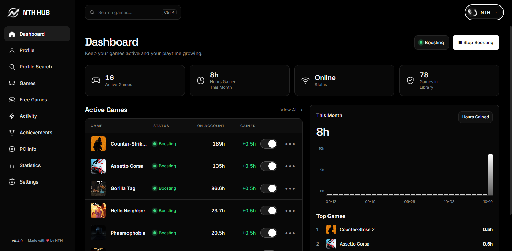

01 / LIBRARY
Game boosting
See which games are active, manage boosting status, and follow your gained playtime from one dashboard.
Boosting +0.5h
Keep your games active, explore your Steam profile, and understand your gaming activity — all from one focused desktop hub.

A compact, dark-first interface designed to keep the important things close and the clutter out.
See which games are active, manage boosting status, and follow your gained playtime from one dashboard.
Review account standing, level, friends, inventory value, and public profile details.
Browse free-to-play titles and limited-time free-to-keep promotions.
Keep an eye on CPU, memory, GPU usage, uptime, and hardware information.
Follow hours gained, game-by-game progress, and a readable timeline of recent events.
Active games and hours gained.
Filter and manage your games.
Account details and standing.
Understand your progress.
A straightforward Windows installer.
Select any screenshot to view it at full size. Use the arrows or keyboard to browse.